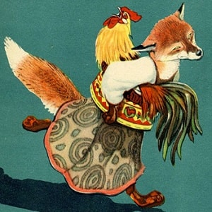

Жили-были кот, дрозд да петушок — золотой гребешок. Жили они в лесу, в избушке.
Кот да дрозд ходят в лес дрова рубить, а петушка одного оставляют. Уходят — строго наказывают:
— Мы пойдем далеко, а ты оставайся домовничать, да голоса не подавай, когда придет лиса, в окошко не выглядывай.
Проведала лиса, что кота и дрозда дома нет, прибежала к избушке, села под окошко и запела:
— Петушок, петушок,
Золотой гребешок,
Масляна головушка,
Шелкова бородушка,
Выгляни в окошко,
Дам тебе горошку.
Петушок и выставил головку в окошко. Лиса схватила его в когти, понесла в свою нору. Закричал петушок:
— Несет меня лиса
За темные леса,
За быстрые реки,
За высокие горы…
Кот и дрозд, спасите меня!..
Кот и дрозд услыхали, бросились в погоню и отняли у лисы петушка. В другой раз кот и дрозд пошли в лес дрова рубить и опять наказывают:
— Ну, теперь, петух, не выглядывай в окошко, мы еще дальше пойдем, не услышим твоего голоса. Они ушли, а лиса опять прибежала к избушке и запела:
— Петушок, петушок,
Золотой гребешок,
Масляна головушка,
Шелкова бородушка,
Выгляни в окошко,
Дам тебе горошку.
Петушок сидит помалкивает. А лиса — опять:
— Бежали ребята,
Рассыпали пшеницу,
Курицы клюют,
Петухам не дают…
Петушок и выставил головку в окошко:
— Ко-ко-ко! Как не дают?!
Лиса схватила его в когти, понесла в свою нору.
Закричал петушок:
— Несет меня лиса
За темные леса,
За быстрые реки,
За высокие горы…
Кот и дрозд, спасите меня!..
Кот и дрозд услыхали, бросились в погоню. Кот бежит, дрозд летит… Догнали лису — кот дерет, дрозд клюет, и отняли петушка.
Долго ли, коротко ли, опять собрались кот, да дрозд в лес дрова рубить. Уходя, строго-настрого наказывают петушку:
— Не слушай лисы, не выглядывай в окошко, мы еще дальше уйдем, не услышим твоего голоса.
И пошли кот, да дрозд далеко в лес дрова рубить. А лиса — тут как тут: села под окошечко и поет:
— Петушок, петушок,
Золотой гребешок,
Масляна головушка,
Шелкова бородушка,
Выгляни в окошко,
Дам тебе горошку.
Петушок сидит помалкивает. А лиса — опять:
— Бежали ребята,
Рассыпали пшеницу,
Курицы клюют,
Петухам не дают…
Петушок все помалкивает. А лиса — опять:
— Люди бежали,
Орехов насыпали,
Куры-то клюют,
Петухам не дают…
Петушок и выставил головку в окошко:
— Ко-ко-ко! Как не дают?!
Лиса схватила его в когти плотно, понесла в свою нору, за темные леса, за быстрые реки, за высокие горы…
Сколько петушок ни кричал, ни звал — кот и дрозд не услышали его. А когда вернулись домой — петушка-то нет.
Побежали кот и дрозд по Лисицыным следам. Кот бежит, дрозд летит… Прибежали к лисицыной норе. Кот настроил гусельцы и давай натренькивать:
— Трень, брень, гусельцы,
Золотые струночки…
Еще дома ли Лисафья-кума,
Во своем ли теплом гнездышке?
Лисица слушала, слушала и думает: «Дай-ка посмотрю — кто это так хорошо на гуслях играет, сладко напевает».
Взяла да и вылезла из норы. Кот и дрозд ее схватили — и давай бить-колотить. Били и колотили, покуда она ноги не унесла.
Взяли они петушка, посадили в лукошко и принесли домой.
И с тех пор стали жить да быть, да и теперь живут.